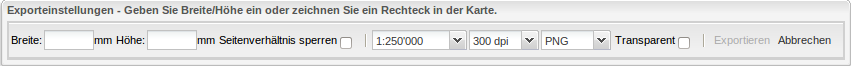

Allgemeines
Das Anwendungsfenster ist in zwei Bereiche aufgeteilt: eine Spalte auf der linken Seite (Weitere Karten, Kartenebenen und Information zur Karte) und auf der rechten Seite das Hauptkartenfenster mit einer Werkzeugleiste oberhalb der Karte.
Der linke Bereich kann geschlossen und wieder geöffnet werden (mit dem Doppelpfeil in der oberen rechten Ecke der Spalte).
Kartenthemen wechseln
Durch Anklicken des Buttons Weitere Karten in der linken Spalte erscheinen im Hauptkartenfenster alle verfügbaren Karten (mit Titel und Bild).
Auf der linken Seite des (neu geöffneten) Fensters Kartenthemen kann ausgewählt werden, ob Alle Kartenthemen oder ob nur die Karten zu einem der drei Oberthemen (Grundlagen und Planung, Natur und Umwelt, Bevölkerung und Wirtschaft) angezeigt werden sollen.
Durch Anklicken eines Bildes wird im Hauptkartenfenster die neue Karte geöffnet.
Mit Kartenebenen arbeiten
In der linken Spalte sind unter Kartenebenen alle Layer einer Karte aufgelistet. Ein Layer ohne Haken ist in der Karte nicht sichtbar. Durch Setzen eines Häkchens können Sie einen Layer einschalten, so dass er in der Karte angezeigt wird. Durch das Anklicken eines bestehenden Häkchens können die gewünschten Layer ausgeschaltet werden.
Diejenigen Layer, die grau beschriftet sind, sind ebenfalls nicht sichtbar, da sie im aktuellen Massstab der Karte nicht dargestellt werden. Wenn Sie mit dem Mauszeiger auf den Namen des Layers fahren, erscheint der Massstabsbereich, in welchem der Layer sichtbar ist.
Legenden ansehen
Um die Legende einer Kartenebene darzustellen, klicken Sie bitte auf den  -Button vor dem Namen eines Layers. Die Legende dieses Layers erscheint in einem neuen Fenster im Reiter Legende.
Wenn Sie die komplette Legende einer Karte anschauen wollen, kann der -Button des Kartenprojektes angeklickt werden (oberste "Kartenebene") und die Legende erscheint ebenfalls in einem neuen Fenster.
-Button vor dem Namen eines Layers. Die Legende dieses Layers erscheint in einem neuen Fenster im Reiter Legende.
Wenn Sie die komplette Legende einer Karte anschauen wollen, kann der -Button des Kartenprojektes angeklickt werden (oberste "Kartenebene") und die Legende erscheint ebenfalls in einem neuen Fenster.
Durch Klicken auf die Karte können Sie Informationen zu den Kartenobjekten abfragen. Der Klickpunkt wird als Stecknadel visualisiert.
Wenn keine Resultate dargestellt werden, kann es daran liegen, dass eine Abfrage im aktuellen Kartenmassstab nicht möglich ist oder dass kein abfragbares Objekt an dieser Stelle liegt.
Nach Kartenobjekten suchen
Geben Sie einen Suchbegriff (Adresse, Grundbuchnr., Flurnamen, etc.), oder auch nur einen Teil davon, in die Suchmaske im oberen rechten Teil des Kartenbereichs ein. Alle Objekte, die der Suche entsprechen, werden angezeigt; durch Anklicken können Sie eines davon auswählen.
Der Kartenausschnitt wird dann automatisch so gewählt, dass das Objekt darin enthalten ist. Das Objekt selbst wird farbig hervorgehoben.
Achten Sie darauf den Sucheintrag zu löschen, wenn sie die Standortinformation nicht mehr brauchen. Denn durch das farbige Hervorheben kann es zu unerwünschten Darstellungen, z.B. in der Druckzusammenstellung, kommen (Anleitung zum Drucken siehe Abschnitt Drucken).
Sich in der Karte bewegen
Um einen bestimmten Ausschnitt der Karte auszuwählen, drücken Sie die Shift-Taste auf der Tastatur (gedrückt lassen) und drücken Sie zusätzlich die linke Maustaste (gedrückt lassen). Sie können nun, durch Verschieben der Maus, ein Rechteck über dem gewünschten Ausschnitt aufziehen.
Sie können natürlich auch mit dem Massstabswerkzeug in der linken oberen Ecke des Kartenbereichs oder mit dem Mausrad hinein- und herauszoomen.
Um die Karte im Hauptkartenfenster zu verschieben, drücken Sie die linke Maustaste und halten Sie sie gedrückt, während Sie die Maus verschieben. Weiter können Sie auch konkrete Koordinaten in das Koordinatenfeld in der rechten unteren Ecke eingeben. Dabei verschiebt sich die Karte so, dass der angegebene Koordinatenpunkt in der Mitte der Karte liegt.
Zusätzlich kann auch über die Übersichtskarte unten links im Hauptkartenfenster navigiert werden. Diese zeigt mit einem roten Rechteck an, welcher Kartenausschnitt des Kantons gerade dargestellt wird. Sie können das rote Rechteck an einen gewünschten Standort verschieben und der Kartenausschnitt passt sich dann dementsprechend an.
Die Übersichtskarte kann mit dem "Minus" in der oberen linken Ecke geschlossen und mit dem "Plus" wieder geöffnet werden.
Entfernungen und Flächen messen
Mit den Werkzeugen  und
und  in der Werkzeugleiste oben links können Sie messen. Das Werkzeug wird durch Anklicken des Symbols aktiviert. Ein Klick in der Karte mit der linken Maustaste setzt einen Punkt der zu messenden Linie bzw. Fläche, ein Doppelklick beendet die Messung.
Das Messergebnis wird kontinuierlich neben der zu messenden Linie bzw. Fläche angezeigt. Die Messwerkzeuge können durch nochmaliges Klicken auf das Symbol des Werkzeuges wieder ausgeschaltet werden.
in der Werkzeugleiste oben links können Sie messen. Das Werkzeug wird durch Anklicken des Symbols aktiviert. Ein Klick in der Karte mit der linken Maustaste setzt einen Punkt der zu messenden Linie bzw. Fläche, ein Doppelklick beendet die Messung.
Das Messergebnis wird kontinuierlich neben der zu messenden Linie bzw. Fläche angezeigt. Die Messwerkzeuge können durch nochmaliges Klicken auf das Symbol des Werkzeuges wieder ausgeschaltet werden.
Drucken
Durch Klicken auf das Drucksymbol  erscheint ein Fenster Druckeinstellungen. Im Hauptkartenfenster wird in orange der Druckbereich angezeigt.
Sie können in den Druckeinstellungen die Blattgrösse (A4 oder A3) wählen, aber auch den Druckbereich rotieren und skalieren. Der Druckbereich kann aber auch direkt in der Karte verschoben werden.
Klicken Sie dazu mit der linken Maustaste auf den orangen Bereich und halten Sie sie gedrückt, während Sie die Maus, und somit den Druckbereich, verschieben.
Wenn der Druck ihren Vorstellungen entspricht, klicken Sie im Fenster Druckeinstellungen auf Drucken und ein Druck-PDF wird erstellt.
erscheint ein Fenster Druckeinstellungen. Im Hauptkartenfenster wird in orange der Druckbereich angezeigt.
Sie können in den Druckeinstellungen die Blattgrösse (A4 oder A3) wählen, aber auch den Druckbereich rotieren und skalieren. Der Druckbereich kann aber auch direkt in der Karte verschoben werden.
Klicken Sie dazu mit der linken Maustaste auf den orangen Bereich und halten Sie sie gedrückt, während Sie die Maus, und somit den Druckbereich, verschieben.
Wenn der Druck ihren Vorstellungen entspricht, klicken Sie im Fenster Druckeinstellungen auf Drucken und ein Druck-PDF wird erstellt.
Zusätzlich kann auch eine Drucklegende generiert werden. Dies funktioniert folgendermassen: Anklicken des Drucksymbols und bei den Einstellungen der Blattgrösse das Layout für die Legende wählen.
Danach wieder auf Drucken klicken und die Drucklegende wird generiert.
Kartenausschnitt als Bild exportieren
Wenn auf das Kamerasymbol geklickt wird, erscheint ein Fenster mit den Exporteinstellungen:

Nun kann in der Karte der gewünschte Kartenausschnitt mit der Maus aufgezogen werden (klicken und ziehen). Falls das entstandene Rechteck nicht genau dem gewünschten Ausschnitt entsprechen sollte, kann dieses mittels Textfeldern (Breite und Höhe) oder direkt in der Karte
durch verschieben Ecke verändert werden. In den Exporteinstellungen kann nebst dem Bildausschnitt, der Massstab, die Auflösung des Bildes (dpi) und der Bildtyp eingestellt werden. Beim Bildtyp kann zwischen PNG und JPEG gewählt werden.
Transparenz kann nur bei PNG ausgewählt werden.
Nachdem der gewünschte Kartenausschnitt und die entsprechenden Einstellungen gemacht wurden, kann der Kartenausschnitt mittels Knopf Exportieren ausgeführt werden. Je nach
Bildausschnitt kann es eine Weile dauern, bis das exportierte Bild im Fenster erscheint. Um das Bild zu Speichern, kann das Kontext-Menü (Rechts-Klick) verwendet werden.
Permalink
Mit folgendem Symbol können Sie sich den Permalink der aktuellen Webseite anzeigen lassen, welchen Sie z.B. für eine Quellenverweis benötigen.